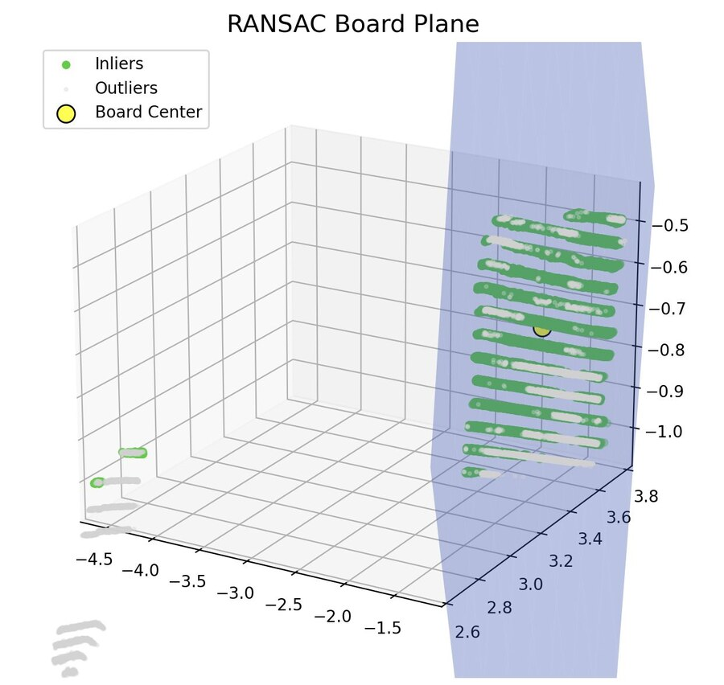
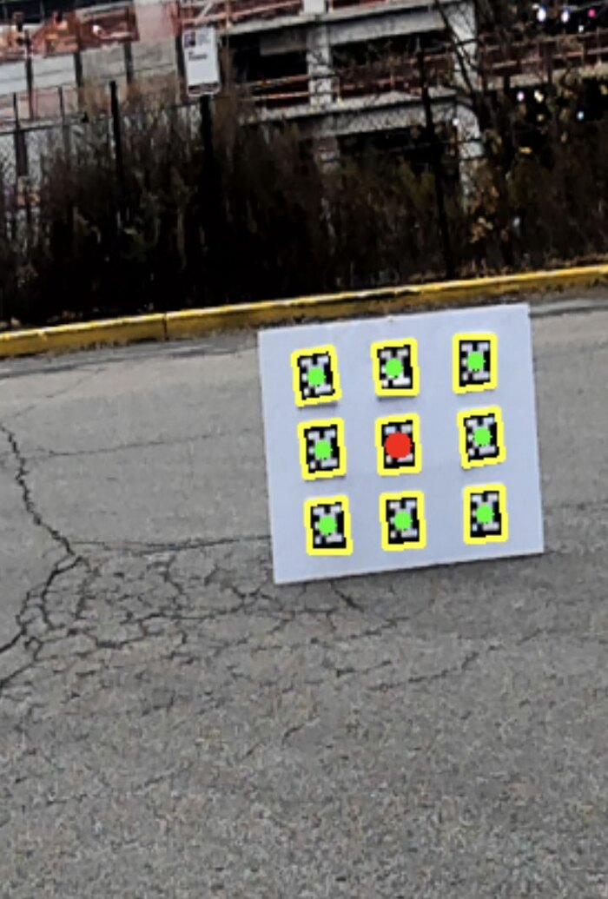
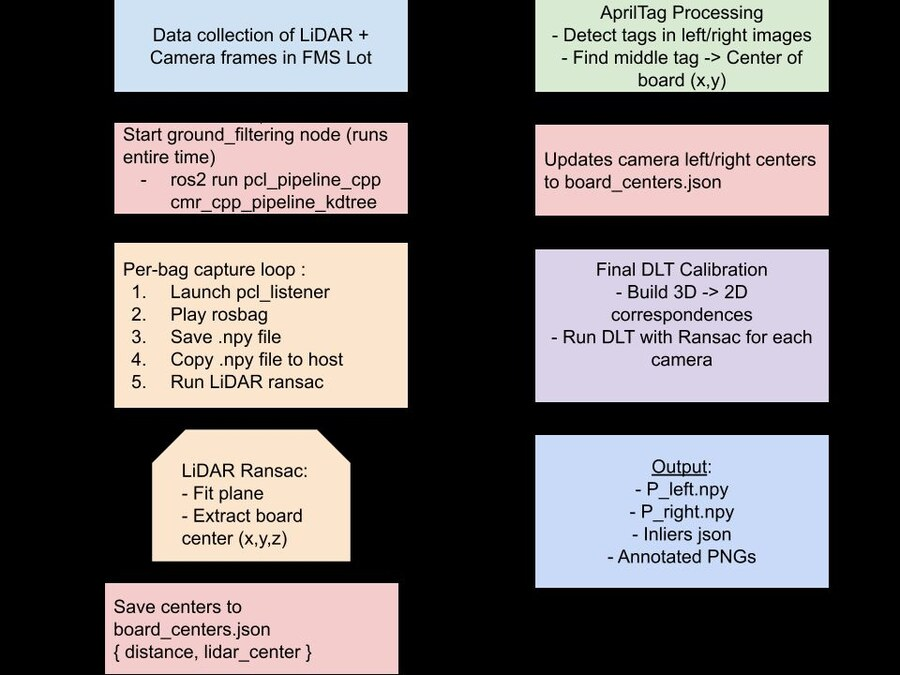

LiDAR–Camera Calibration for a Driverless Race Car


The problem
CMR's driverless car finds cones with a LiDAR and recognizes them in camera images with YOLO. To match the two, every LiDAR point must be mapped to the right camera pixel. That mapping ("point-to-pixel") has to be recalibrated whenever a sensor moves. The team's previous method was hand-matching LiDAR points to image pixels: slow and error-prone. Better calibration means better cone matching, and so better driving.
What I built
As project lead, I designed and built an automated pipeline that takes rosbags of a calibration board placed at different spots in front of the car and outputs a projection matrix for each of the two cameras.
- LiDAR board center: a ROS 2 node converts each rosbag's ground-filtered point cloud to NumPy and crops to the region where the board should be. RANSAC then fits a plane (constrained to be roughly vertical, like the board) and takes the board center as the inliers' centroid projected onto that plane.
- Camera board center: detect every AprilTag on the board in the left and right camera images, take the median of the tag centers, and use the tag closest to it (the middle tag) as the board center in pixels.
- Solve the mapping: pair each LiDAR center with its pixel center and solve for each camera's 3×4 projection matrix with the Direct Linear Transform (DLT), wrapped in RANSAC (1,000 iterations, 3-pixel threshold) to reject bad pairs.
- One command:
run_pipeline.pyorchestrates everything (starts the nodes in Docker, plays each bag, collects results, runs both calibrations) and saves validation images that overlay projected LiDAR centers on the camera frames.

Results and design review
Using board positions at 8, 10, 20 and 30 ft from the car, the first end-to-end run produced projection matrices for both cameras (12 left-camera and 11 right-camera correspondences, 7 RANSAC inliers each). I presented the module at a design review in December 2025.
Reviewer feedback shaped the next steps:
- Geometry: board centers all sit at about the same height, so the points are close to coplanar, which DLT handles poorly. Next: vary board height and use every tag (not just the center), or use the cameras' known intrinsics and solve only for the LiDAR-to-camera pose.
- Validation: test on held-out board positions, report a pass/fail error threshold justified by a cone's pixel width at range, and check repeatability across runs and lighting.
- Engineering: move magic numbers into a config file, add logging and debug levels, and bias data collection toward where cones appear in each camera's view.